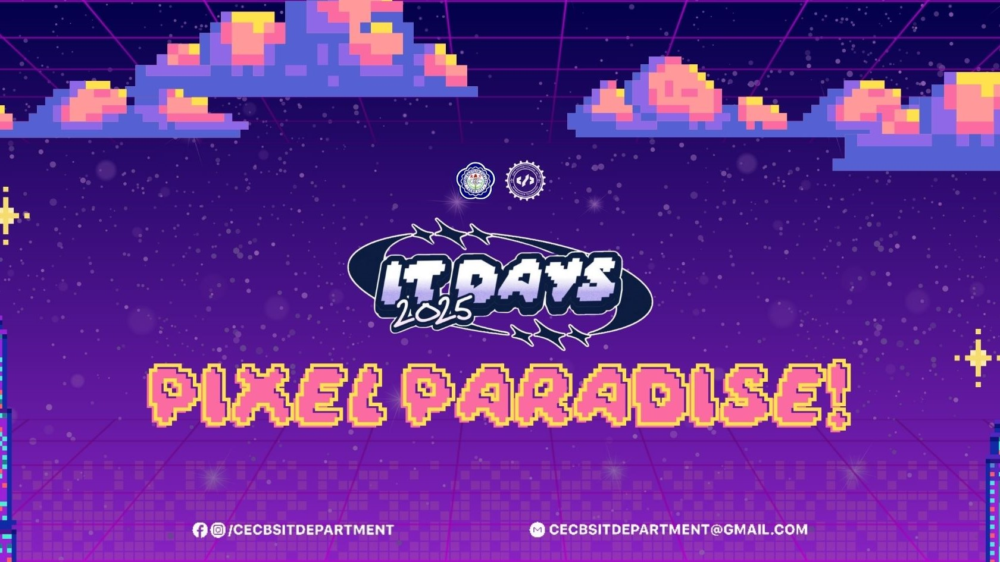

CEC IT Days 2025

The CEC IT Days 2025 was a super fun and exciting event for all IT students! It was a whole week filled with games, contests, and friendly competition. Everyone got a chance to show their skills—not just in tech stuff, but also in creativity, teamwork, and even style.
Mr. & Ms. IT 2025
The event started with the Mr. and Ms. IT pageant. Contestants wore different outfits, performed cool talents, and answered questions in front of the crowd. It wasn’t just about looks—it was about confidence, brains, and personality too! Everyone cheered loud as the winners were finally crowned.
BlockBlast Tournament
This game was all about fast thinking and fast hands! Players tried to beat each other in a Tetris-style game where blocks kept falling. It looked easy at first, but the longer it went, the harder it got. Only the most focused players made it to the finals!
Mobile Legends Tournament
The ML tournament brought serious hype. Teams of five battled it out in intense matches, showing off their teamwork and strategy. The crowd really got into it—shouting, cheering, and celebrating big plays.
Programming Contest
For the coding wizards, there was a programming contest. Participants were given problems to solve using code—and they had to be quick and correct! It was a real challenge, but it was also a great way to learn and test what they know.
Robotics Competition
One of the coolest parts of IT Days was the robotics contest. Students built and showed off their own robots—some could follow lines, others could move objects. It was awesome to see their hard work and creativity come to life!
Quiz Bee
The quiz bee tested how much students know—not just IT topics, but also general knowledge. Teams answered questions as fast as they could, and it got competitive! It was both fun and nerve-wracking, especially when scores were super close.